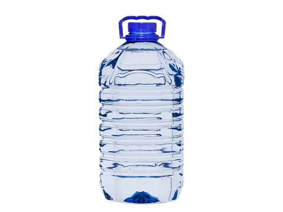

CrystalPure premium bottle water 50cl.
Perfect sized for lunch packs & outdoor parites.
50cl per bottle, 12 bottles per pack.
100% pure.
Clean, safe, and refreshing bottled water produced with modern purification technology.
View Our ProductsCrystalPure Bottled Water Ltd. is dedicated to providing clean, safe, and refreshing drinking water for homes, offices, and businesses. Our water goes through a carefully monitored purification process using modern filtration and sterilization technology to ensure every bottle meets the highest standards of quality and hygiene.
We believe that access to pure drinking water is essential for a healthy lifestyle. That is why we focus on maintaining strict quality control at every stage of production — from water sourcing to bottling and distribution.
At CrystalPure Bottled Water Ltd. our goal is simple: to deliver reliable, great-tasting water that keeps you hydrated and supports your well-being every day.
About Us
Perfect sized for lunch packs & outdoor parites.
50cl per bottle, 12 bottles per pack.
100% pure.
This refreshing bottle fits conveniently in most car cup holders.
75cl per bottle, 12 bottles per pack.
100% pure.

Designed for sharing with friends and family.
1.5L per bottle, 6 bottles per pack.
100% pure.
Multi-stage purification removes impurities.
Every batch is tested for safety and purity.
Available for homes, offices and vendors.
Water is one of the most essential elements for maintaining a healthy body. Every cell, tissue, and organ in the body relies on water to function properly. Drinking enough clean water throughout the day helps keep the body hydrated and supports many important bodily processes.
Proper hydration helps regulate body temperature, improves digestion, and assists the body in removing waste and toxins. It also helps maintain healthy skin, supports brain function, and keeps energy levels stable throughout the day. When the body does not get enough water, it can lead to dehydration, fatigue, headaches, and reduced concentration.
Health experts recommend drinking water regularly throughout the day to maintain proper hydration. Whether at home, at work, or during physical activity, having access to clean and safe drinking water is essential for overall well-being.
Water is sourced from a carefully selected underground source.
The water passes through multi-stage filtration systems to remove impurities.
Advanced purification methods ensure the water is safe and clean.
The purified water is automatically bottled in sterilized containers.
Each batch is tested to ensure it meets safety and quality standards.
At CrystalPure Bottled Water Ltd., quality is our top priority.
We follow strict quality control procedures including:
Reducing plastic waste
Encouraging recycling
Using energy-efficient production equipment
Have questions about our bottled water or interested in becoming a distributor? Our team is ready to assist you.
Contact Us